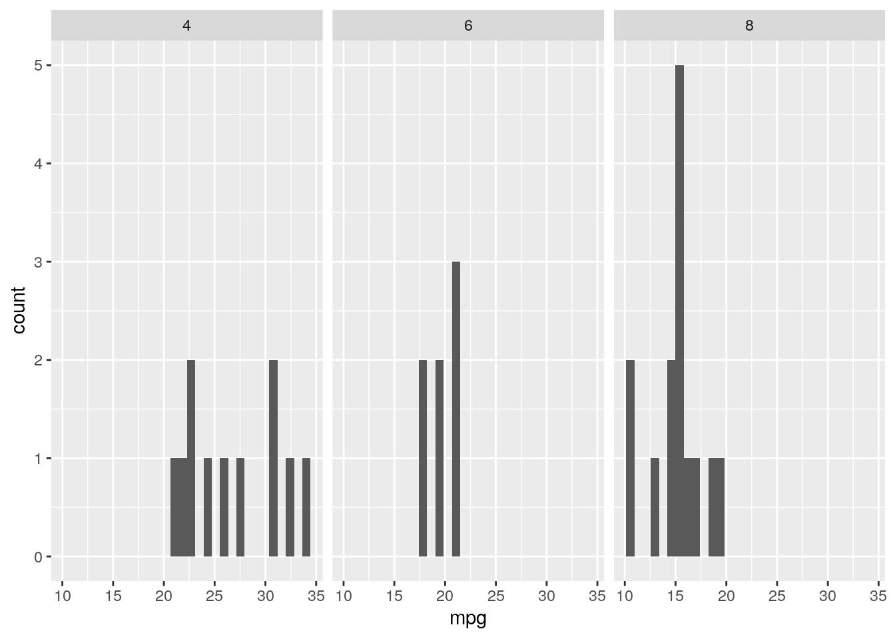
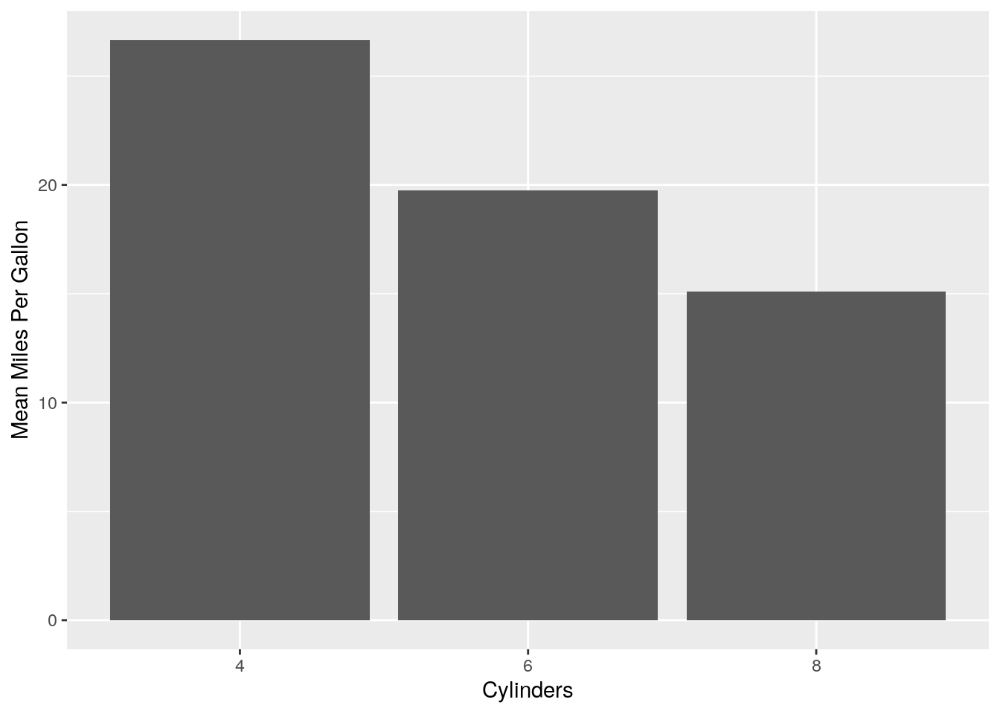
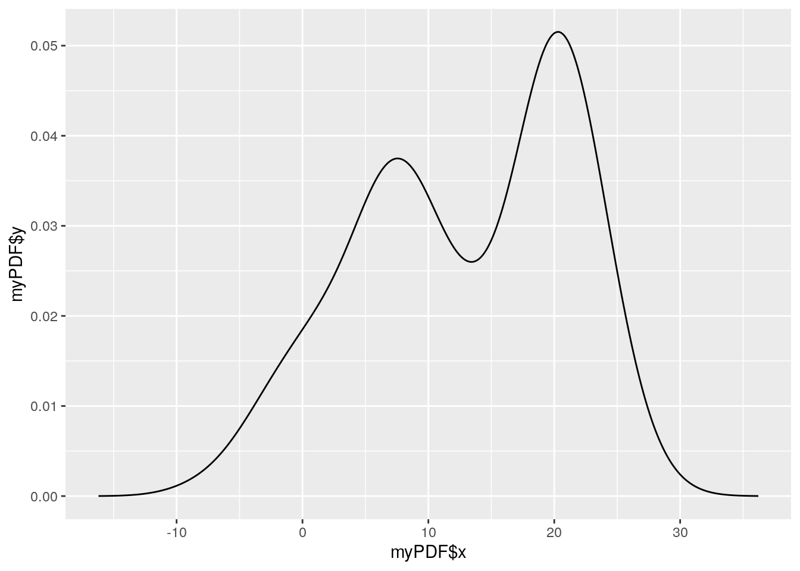
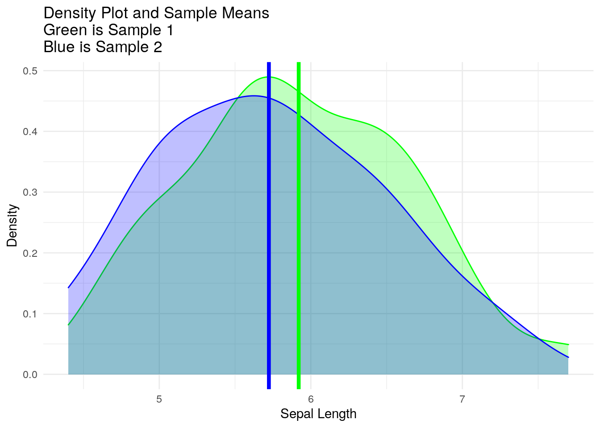

3 Statistics Review
3.1 Introduction
In this section, we will briefly review the probability and statistics topics that are relevant to the design and analysis of experiments for modeling and simulation. In particular, we will cover:
- Descriptive Statistics
- Statistical Concepts
- Statistical Inference
- Analysis of Variance
3.1.1 Resources
The following are useful resources to review these topics:
- The Khan Academy AP Statistics Course
- The MIT Open Courseware Introduction to Probability and Statistics taught by Orloff and Bloom in Spring 2014
- Any standard probability and statistics text, e.g.:
- Devore’s *Probability and Statistics for Engineering and the Sciences
- Hayter’s Probability and Statistics for Engineers and Scientists
- Please note, there is no need to buy anything or especially the latest version. Older versions are almost always perfectly accurate and significantly cheaper.
- There are a variety of free texts, for example: Statistical Inference via Data Science hosted via Bookdown is nice. The NIST Engineering Statistics from NIST is also incredibly useful.
Given the extensive coverage of these topics, most of this section will be terse and/or refer to external resources as anything I might write is likely redundant. That stated, if you are familiar with these topics, try your hand at the problem sets if you’re rusty or have not ever done statistics using R.
3.1.2 Organization
The remainder of this chapter is organized as follows:
- Lesson
- Lesson Description
- Lesson Tutorial
- Lesson Problem Set
3.1.3 POC
For any noted issues (especially errors), please contact: Steve Gillespie at stephen.e.gillespie.mil@mail.mil or Emma Schlagenhauff at emma.schlagenhauff.civ@mail.mil.
3.2 Descriptive Statistics
3.2.1 Descriptive Statistics - Description
This section is a refresher for analysts on basic descriptive statistics including the following concepts:
- Measures of central tendency: mean, median, mode.
- Measures of dispersion: standard deviation and variance, interquartile range, and range.
- Standard plots including: boxplots, histograms, density plots.
- Empirical probability distributions and cumulative distribution functions.
3.2.2 Descriptive Statistics - Tutorial
For this tutorial, we assume one is familiar with the measures identified above. If not, please view the following videos:
- Khan Academy AP Statistics Displaying and Describing Quantitative Data
- Khan Academy AP Statistics Summarizing Quantitative Data
- Khan Academy AP Statistics Modeling Data Distributions
The remainder of this tutorial is simply brief concept descriptions and examples in R.
3.2.2.1 Measures of Central Tendency
3.2.2.1.1 Mean
The mean of a set of \(n\) numbers: \({a_1, a_2, ... a_n}\) is \(\frac{\sum_{i=1}^na_i}{n}\)
In R we can calculate the mean of a vector as follows:
## [1] 0 1 2 3 4 5 6 7 8 9 10## [1] 53.2.2.1.2 Median
The mean of a set of \(n\) numbers as listed above is:
- If the set is finite and has odd cardinality, the number “in the middle” of the set when ordered.
- If the set is finite and has even cardinality, the average of the two numbers “in the middle” of the set when ordered.
- If the set is infinite, the value of the 50 percentile.
Using the same data as above x, we can calculate the median as:
## [1] 53.2.2.1.3 Mean and Median Note - Treatment of NA
As you may have experienced, often data sets are incomplete. In R these missing values are often represented as NA. Both mean() and median() have an argument called na.rm that is defaulted to FALSE. Let’s see what happens:
## [1] 0 1 2 3 4 5 6 7 8 9 10 NA## [1] NA## [1] NAThis is a logical result as it lets us know we really can’t determine the mean (you can’t sum an NA either). If you want to drop the NAs and calculate the mean or median with only the values available (understanding that you are missing data), you can do this by changing the default for na.rm as follows:
## [1] 0 1 2 3 4 5 6 7 8 9 10 NA## [1] 5## [1] 53.2.2.1.4 Mode
The mode of a discrete set of numbers is the number (or numbers) that occurs most frequently in the set.
Inexplicably, R does not have a base function for mode. If you want to find the mode of a set, you can solve this problem in any number of ways. Here is one approach, I recommend you trying to do this in a different way!
## [1] 1 2 3 4 5 6 7 8 9 10 2 3 2 3 2 3 2 3 2 3# Note that the mode is not what you would expect. It tells you something about the data type
mode(y)## [1] "numeric"# Create a data frame with the values of y, then group by the individual values and count them. I'll use dplyr to manipulate the dataframe
library(dplyr)
myDF <- data.frame(Num = y)
myDF <- myDF %>% group_by(Num) %>% dplyr::summarise(Count = n(), .groups='drop') # We create a data frame that gives us the count of y
myDF## # A tibble: 10 x 2
## Num Count
## * <dbl> <int>
## 1 1 1
## 2 2 6
## 3 3 6
## 4 4 1
## 5 5 1
## 6 6 1
## 7 7 1
## 8 8 1
## 9 9 1
## 10 10 1## [1] 2 3While that is a bit annoying, if one was frequently finding the mode of a set, we could define a function that does this and save it and reference it later.
3.2.2.2 Measures of Dispersion
3.2.2.2.1 Standard Deviation
The standard deviation \(\sigma\) and variance \(\sigma^2\) of a set of numbers measures the “spread” or “dispersion” of the set of data from its mean. It is calculated as:
- \(\sigma = \sqrt{\frac{\sum(x_i - \mu)^2}{N}}\) where \(\mu\) is the population mean.
Often we do not know the population mean and estimate it from the sample, so we must get the sample standard deviation as:
- \(s = \sqrt{\frac{\sum(x_i - x\bar)^2}{N-1}}\) where \(\bar{x}\) is the sample mean.
R defaults to use the sample standard deviation and variance (i.e., the \(N-1\) denominator), though for sufficiently large sample sizes, the effect of this is minimal.
Let’s see how to do this:
# Create a random set of data. We'll use the function rnorm(n, mean, standard deviation)
# which produces random numbers from a normal distribution with the provided mean and the
# provided standard deviation.
x <- rnorm(30, mean = 10, sd = 2)
x## [1] 9.481679 10.106188 8.030881 10.153189 6.405635 10.999582 5.192514
## [8] 9.559060 8.409480 11.205995 13.337560 6.865334 9.307742 11.170984
## [15] 9.622531 10.493340 8.204369 9.531700 12.531379 8.212803 10.215235
## [22] 11.246772 7.921006 7.926419 8.722660 9.858107 15.180443 9.387789
## [29] 14.657690 10.749475## [1] 9.822918## [1] 2.213116## [1] 4.897881Note that the provided (i.e., true) mean is 10 and the provided (i.e, true) standard deviation is 2, but our estimates are just that, statistical estimates.
3.2.2.2.2 Median Absolute Deviation
The median absolute deviation (MAD) is a robust measure of the spread of a set of data. It is robust in the sense that it is not highly sensitive to outliers or non-normality. The MAD is defined as the median of the absolute value of the difference between each observation in a set and the set’s median:
\(MAD = median(|Y_i - median(Y)|)\)
Where \(Y_i \in Y\) and Y is the set under question.
For example, consider the set: \(Y = 1, 2, 3... 10\). This set has a median of 5.5. We can then make a new set, \(W\), of the absolute value of the difference between the median and the observation, i.e.:
\(W = {|1-5.5|, |2-5.5|,|3-5.5|, ... |10-5.5|} = {4.5, 3.5, 2.5, ..., 4.5}\)
The MAD is then the median of \(W\). We can calculate this as follows:
## [1] 1 2 3 4 5 6 7 8 9 10## [1] 5.5# Note how R applies the operation below to each member of the vector
W <- abs(Y-Y.median) # Define W as the set of the absolute value of the difference between Y and its median
W## [1] 4.5 3.5 2.5 1.5 0.5 0.5 1.5 2.5 3.5 4.5## [1] 2.5So, we see that the \(MAD\) of {1, 2, …10} is 2.5. Of course, the above coding was onerous; fortunately, R has a function, mad() to do this for us; however, the default in R is to add a normalizing factor above and beyond the standard \(MAD\) calculation. What mad() returns is the \(MAD\) as defined above times a constant. In R, the default constant is 1.4826 (read the R help on mad() for an explanation as to why). If you simply want the standard \(MAD\), adjust the constant to 1 as seen below:
## [1] 2.53.2.2.2.3 Range
While not a typical statistic, it is often useful to know the maximum and minimum of a set, and, sometimes, their difference. These numbers are self explanatory and can be quickly computed in R as follows:
## [1] 100## [1] 1## [1] 1 1003.2.2.2.4 Interquartile Range (IQR)
The interquartile range of a set is the middle 50% of the set, or the difference between the value associated with the 75th percentile and the 25th percentile. We can calculate this in a number of ways in R.
# First define a set of numbers. Let's take 100 samples of the normal distribution with a
# mean of 0 and a standard deviation of 1.
x <- rnorm(100) # Note the defaults for rnorm are the mean and standard deviation as listed above.
# If you simply want the interquartile range, this function provides it:
IQR(x)## [1] 1.329045## 0% 25% 50% 75% 100%
## -1.661199569 -0.720687045 0.002908299 0.608357605 2.933176036# You could do this and retype in the numbers explicitly, but that is not robust to
# varying data sets. Understanding the output of quantile() is helpful. We can see this
# by saving the output
myQuantile <- quantile(x)
# You can see what myQuantile is by looking at its type (note, it's a double)
typeof(myQuantile)## [1] "double"# If you noted in the output that as opposed to what happens when you output a normal
# vector, you had associated names, you can see these names as follows
names(myQuantile)## [1] "0%" "25%" "50%" "75%" "100%"# But, with this knowledge, you can call the specific indices you want (recall, R indexes vectors starting at 1!!!)
myQuantile[4]## 75%
## 0.6083576## 25%
## -0.720687# You could then subtract the two
myQuantile[4] - myQuantile[2] # note this preserves the names of the first result (annoying and inaccurate in this case)## 75%
## 1.329045## 75%
## TRUE3.2.2.3 Standard Plots
This section assumes one is somewhat familiar with ggplot(). If not, please refer to the introduction to R chapter.
3.2.2.3.1 Boxplot
A boxplot, or sometimes a box and whisker plot, shows dispersion of data according to its median, 75th and 25th percentiles (IQR) (which form the box), plus "whiskers that extend to 1.5 * IQR beyond the 25th and 75th percentiles and then any outliers. This picture from wikipedia shows it very well:

Boxplot Description From Wikipedia
To plot a boxplot in R, use geom_boxplot() as described below:
library(ggplot2) # We will use ggplot for all graphing
# This plot uses mtcars and shows the dispersion of miles per gallon across all observations
# Note, since we consolidated all of our observations into a single category,
# we have no need to have an x axis.
ggplot(data = mtcars) + geom_boxplot(aes(x = '', y = mpg))
Often we want to understand the variability by some other explanatory variable, in this case we can assess by the number of cylinders in a car
# This plot uses mtcars and shows the dispersion of miles per gallon across all observations
# Note that in mtcars$cyl, the number of cylinders is numeric, but geom_boxplot will fail
# with this input as an x, it needs a factor
ggplot(data = mtcars) + geom_boxplot(aes(x = as.factor(cyl), y = mpg)) 
3.2.2.3.2 Histograms & Density Plots
Histograms and density plots are useful to understanding how data is distributed across a variable (i.e., how frequently it occurs). We can plot these by using geom_histogram() and geom_density() respectively.
Histogram:
# Note you have many different options with geom_histogram such as binwidth. I recommend
# you spend some time playing with the options and understand what is occurring
ggplot(mtcars) + geom_histogram(aes(x = mpg)) ## `stat_bin()` using `bins = 30`. Pick better value with `binwidth`.
# You can also facet this, perhaps by cylinder
ggplot(mtcars) + geom_histogram(aes(x = mpg)) + facet_wrap(~cyl)## `stat_bin()` using `bins = 30`. Pick better value with `binwidth`.
Density plots

Often it is nice to look at density plots overlayed on each other across some aesthetic (e.g., cylinders)
# note that aesthetics often do not work with numeric values, it's often better to term them a factor
ggplot(mtcars) + geom_density(aes(x = mpg, color = as.factor(cyl))) 
3.2.2.3.3 Bar or Column Charts
Sometimes we want to represent counts or means or other statistics for some set of data, geom_col() and geom_bar() both allow us to do this. This is also a good exercise in grouping and summarizing data.
myData <- mtcars %>%
group_by(cyl) %>%
summarise(Mean.MPG = mean(mpg), Number = n()) %>%
mutate(cyl = as.factor(cyl))
# Note this gives us a new data frame that makes cyl a factor and give us the mean miles
# per gallon for each sized engine and the number of observations for each engine size.
myData ## # A tibble: 3 x 3
## cyl Mean.MPG Number
## * <fct> <dbl> <int>
## 1 4 26.7 11
## 2 6 19.7 7
## 3 8 15.1 14The column plot shows the mean miles per gallon.
ggplot(myData) +
geom_col(aes(x = cyl, y = Mean.MPG)) + # This gives us a column chart with cylinders on the x axis and miles per gallon on the y
xlab('Cylinders') + # It's a good idea to label your axes usefully
ylab('Mean Miles Per Gallon')
This bar plot shows

We can also turn this into a pie chart by changing coordinates:
ggplot(myData) + geom_bar(aes(x = '', y = Number, fill = cyl), stat = 'identity') +
coord_polar('y', start = 0)
3.2.2.4 Understanding, Calculating, and Plotting Distributions
Probability distributions are fundamental to statistics. In this section, we’ll cover three things:
- How R produces standard probability distributions.
- How R can be used to build an empirical distribution from a set of data.
- How R can be used to plot any probability distribution.
3.2.2.4.1 Standard Probability Distributions
It is worth reviewing probability theory and probability distributions before beginning. Please see the resources above. Additionally:
- This link from William and Mary is really cool. It shows the linkage of all univariate probability distributions!
- This link from the University of Minnesota is very useful. It shows all the basic random variable functions in R. I’ll only show a few so as not to be redundant.
First, let’s recall the normal (or Gaussian) distribution . This (or its approximation) is likely the most commonly used distribution in all of statistics.

R has built in functions to get a random number from this distribution, rnorm(), which stands for random normal. It works as follows:
#rnorm(n, mean, sd) where n is the number of random numbers desired, mean is the mean
# for your distribution, and sd is the standard deviation
rnorm(1, 0, 1)## [1] 2.803058## [1] 0.1174497# Note that if you ask for a vector, it will return N independent, identically
# distributed values
rnorm(10, 0, 1)## [1] 0.05649155 0.26344133 0.43058039 -0.20057846 -1.03925039 -1.20096107
## [7] -0.47360459 0.79003676 -0.15714316 -0.77605794As a side note, the set.seed() command is useful if you want to set the random number generator seed for R if you’re concerned about replicability. As a side note, R, like nearly every (or perhaps all) other programming languages actually generates pseudorandom numbers. See the documentation here if you’re really concerned about it. Back to set.seed():
# recall that rnorm() returns a random number, and invoking it twice will almost
# assuredly return two different numbers.
rnorm(1) # recall that we can rely on the defaults for mean and standard deviation ## [1] 0.9734257## [1] -0.4674196# But, if we want to reproduce the same number every time **randomly** we can set the seed
set.seed(173)
rnorm(1)## [1] 1.053903## [1] 1.053903Now that we can create a random number or set of numbers from the normal distribution, we may ask ourselves other things, like, given a distribution, what’s the probability that I’ll randomly select a number in a given range. R, conveniently provides us this with the pnorm() function. It works as follows:
# The syntax is: pnorm(q, mean, standard deviation)
# This returns P(X <= q) where X ~ N(mean, standard deviation)
# Recall the normal distribution is symmetric about its mean, so you have a 50% chance of
# seeing a value less than the mean.
pnorm(0, 0, 1)## [1] 0.5## [1] 0.5# And we know that we should get some number smaller than .5 if we choose a value less than the mean
pnorm(-1, 0, 1)## [1] 0.1586553# Similarly we should see some number that is higher than .5 if we choose a value greater than the mean
pnorm(1, 0, 1)## [1] 0.8413447# We can of course, find the probability that a number is between two values by taking the
# differences, for example, the probability that a number drawn from N(0, 1) is between -.5
# and .6 is calculated as:
pnorm(.6) - pnorm(-.5)## [1] 0.4172093# Note, up until now, we have been operating with a default argument, lower.tail = TRUE
# This argument makes it so that we calculate P(X <= q). If we switch it to false, we'll
# calculate the inverse, P(X >= q). For example: we can say what is the probability that
# a number randomly drawn from the standard normal is greater than 2:
pnorm(2, lower.tail = F)## [1] 0.02275013# We could, of course be mathy and calculate this as 1 - P(X <= 2), X~N(0,1)
1 - pnorm(2) # Fortunately, this gives us the same result (which it should!!).## [1] 0.02275013# Finally, pnorm has another argument, log.p = FALSE. If you opt for this to be true,
# it will return the log of the probability. This can be useful,
# see: https://en.wikipedia.org/wiki/Log_probability but I rarely, if ever do this.
# See for example what happens when we change the flag:
pnorm(0, log.p = T)## [1] -0.6931472## [1] -0.6931472pnorm() returns the “probability” (i.e. the cumulative distribution function). Sometimes we may want its inverse, that is, for a given percentile (or quantile), we want to know the value. We get this with the qnorm() function. Note that it has all of the same arguments as pnorm.
# We know that the normal distribution is symmetric, so the 50th percentile should be at
# the mean and we can validate that here:
qnorm(.5) # This returns 0 as we have a mean of 0## [1] 0# We know that you can never get a 100 percentile as the normal distribution doesn't have
# an upper limit
qnorm(1) # R returns infinite, though, the most appropriate thing to say here, is the limit ## [1] Inf# of qnorm(x) as x goes to 1 is infinity! Let's not be pedantic though.
# Similarly, we get an inverse result for a 0th percentile
qnorm(0)## [1] -Inf## [1] -0.6744898## [1] 0.6744898Finally, sometimes we want the “density” (i.e., the values for the probability distribution function) or, colloquially, the y value for a given x on the distribution curve. We get this with dnorm():
## [1] 0.3989423# This implies that when one plots the height of the standard normal function, at 0, it
# would be ~.39 (note, this does NOT mean you have a 40% chance of randomly selecting a
# 0 out of the standard normal). There is no lower.tail argument as that is not meaningful
# for this function, but the log argument defaults to FALSER has a similar standard set up of:
- r[distribution handle] for random number from a distribution.
- d[distribution handle] for density of a number from a distribution.
- p[distribution handle] for the cumulative distribution function.
- q[distribution handle] for the inverse cumulative distribution function.
I recommend you look up your favorite distribution and try it out. Be careful, make sure you read the documentation!!! R (and any computer language) will return exactly what you ask of it. Make sure you know what the parameters are asking for. For example, if you assume that R wants the variance instead of the standard deviation, you will get results for a distribution with a much larger spread than you intended!
Finally, if base R does not have your preferred distribution, I recommend Googling it. Many packages provide additional distributions.
Let’s briefly look at a discrete distribution and then continue on. Recall the binomial distribution which returns the number of successful results out of N trials where you have a probability P of success (you can only succeed or fail in this distribution). *binom() (where * is r, d, p, or q) is what we want.
# Please look at the documentation for the syntax, type the command: ?rbinom to view it
# in RStudio. Let's look at 10 random variables of 4 trials where we have a 50% chance
# of succeeding
rbinom(16, 4, .5)## [1] 2 3 4 2 2 2 2 2 1 2 2 1 4 1 3 1# This likely makes sense, we could analytically think of the probabilities (think of your
# odds of flipping four fair coins), but we can take this to a few edge cases to test the
# results: Consider a guranteed success (i.e., probability of 1)
rbinom(10, 4, 1) # This will return all 4s as we can only win## [1] 4 4 4 4 4 4 4 4 4 4## [1] 0 0 0 0 0 0 0 0 0 0# Let's now consider the probabilities that we'll have n or fewer successes in 4 trials of
# a 50-50 experiment where n is 0, 1, 2, 3, or 4
pbinom(0:4, 4, .5)## [1] 0.0625 0.3125 0.6875 0.9375 1.0000# You can get the probability of getting exactly n successes as we did above. For example,
# the probability of seeing exactly 3 successes is:
pbinom(3, 4, .5) - pbinom(2, 4, .5)## [1] 0.253.2.2.4.2 Build Empirical Distributions
Sometimes, we have a dataset and we want to build our own distribution out of it (for any number of reasons). R has a few functions that help us replicate the above type functions.
First, let’s build a data set:
# We'll build a dataset that is a sample of 100 random variables of two normal
# distributions with differing means and standard deviations
myData <- c(rnorm(100, 20, 3), rnorm(100, 5, 5))
# note we can combine two or more vectors with the c() command
# Let's look at the data to get an idea of what we're working with
ggplot() + geom_density(aes(x = myData))
We can draw a random sample (from this data set!) using the sample function.
# Note 1: This is not the same as a random sample from a probability distribution, this is # only sampling from the given data.
# Note 2: Please see the documentation on sample using ?sample to read about your
# arguments. For example, the default is that replace is FALSE
sample(myData, 5)## [1] 5.702567 4.645398 7.479771 20.364705 20.308881If we want to build a cumulative distribution function, we can use the command ecdf() (empirical cumulative distribution function). This then gives us a function similar to p[distro]().
myCDF <- ecdf(myData)
# We can then use myCDF as a function. Note, it does not have the same optional arguments as p[distro]
myCDF(1:20)## [1] 0.105 0.125 0.145 0.160 0.185 0.235 0.265 0.315 0.375 0.410 0.440 0.460
## [13] 0.475 0.505 0.520 0.545 0.560 0.605 0.660 0.730# if we want to plot this, we can make up data points and assess them with this function
myX <- seq(floor(min(myData)), ceiling(max(myData)), by = .01) # Note here, we are nesting
# functions, we are getting the minimum of myData, which is about -7.6 and taking the
# floor, which rounds us down to -8, and doing a similar process for the maximum, then
# building a vector that is a sequence from -8 to 27 by .01
myY <- myCDF(myX) # we then calculate the cumulative distribution for each number in 'myX'
# Now we can plot each of the assessed points
# Note the \n in the middle of the y label indicates a new line
ggplot() +
geom_line(aes(x = myX, y = myY)) +
xlab('X Value') +
ylab('Probability that a random variable drawn\nfrom this distribution is less than or equal to X') +
ggtitle('Example Empirical Cumulative Distribution Function')
Sometimes we want the inverse (i.e., the quantiles for a given data set). The quantile() function gives us this, though it does not return a function. You simply provide it the data set and the desired quantiles:
# the defaults are to return 0%, 25%, 50%, 75%, and 100% (note that 0 & 100 percentiles
# are equivalent to the maximum and minimum values)
quantile(myData) ## 0% 25% 50% 75% 100%
## -8.325318 6.178409 13.932411 20.314173 28.332020## 10%
## 0.8716211## 0% 10% 20% 30% 40% 50% 60%
## -8.3253183 0.8716211 5.2561141 7.6465339 9.8870812 13.9324113 17.9613913
## 70% 80% 90% 100%
## 19.6611832 20.9977018 22.8964485 28.3320200If we want to turn this into a distribution we can use, however, we can build a probability distribution function with the density() command:
# This outputs the density for a set of Xs (i.e. values) and their associated densities as
# Y's. Note that this is not a data frame, it is a list
myPDF <- density(myData)
myPDF##
## Call:
## density.default(x = myData)
##
## Data: myData (200 obs.); Bandwidth 'bw' = 2.626
##
## x y
## Min. :-16.20 Min. :8.990e-06
## 1st Qu.: -3.10 1st Qu.:1.849e-03
## Median : 10.00 Median :1.797e-02
## Mean : 10.00 Mean :1.906e-02
## 3rd Qu.: 23.11 3rd Qu.:3.277e-02
## Max. : 36.21 Max. :5.153e-02## [1] "list"## [1] "density"## Length Class Mode
## x 512 -none- numeric
## y 512 -none- numeric
## bw 1 -none- numeric
## n 1 -none- numeric
## call 2 -none- call
## data.name 1 -none- character
## has.na 1 -none- logical# And note that it has a call that produces a nice summary when you call the object, the
# function is called density.default
myPDF$call## density.default(x = myData)# If we want to plot the Xs and Ys, we can't treat this as a data frame, but we can access
# the set of Xs and Ys by calling them directly
# Note, this produces the same thing as a geom_density plot as described above
ggplot() + geom_line(aes(x = myPDF$x, y = myPDF$y))
3.2.2.4.3 Probability Distribution Conclusions
You should now be able to generate random variables, calculate probabilities, and plot probability distributions in a number of ways. We specifically showed how to use the normal, binomial, and empirical distributions in R. I recommend you try to do this for other common distributions (e.g., the uniform, the student t, \(\chi^2\), etc.).
Finally, ensure you understand the distribution you are using. Many (perhaps most) have important parameters that are: 1) not necessarily intuitive, and 2) have specific meanings. Often, the parameters are defined in a certain way in R that may or may not be your favorite way of doing it (e.g., using the variance vs. the standard deviation).
3.2.3 Descriptive Statistics - Problem Set
- You can view the problem set here Descriptive Statistics Problem Set .
- For your convenience, here is the problem set as an R Markdown.
- You can download the Ames Iowa data set here Ames, Iowa Data Set .
- You can view the problem set solution here .
3.3 Statistical Concepts
3.3.1 Statistical Concepts - Description
This section is a refresher for analysts on fundamental statistical concepts including the following:
- Statistical terminology.
- Sampling distributions and the central limit theorem.
3.3.2 Statistical Concepts - Tutorial
3.3.2.1 Statistical Terminology.
When doing and discussing statistics, it is important to be precise in your use of language. Here are a few terms we will use:
3.3.2.1.1 Random Sample
“A sample [i.e., a subset] that has been selected from the population in such a way that every possible sample has an equal probability of being selected.” (Montgomery, 2012, pg. 30).
There are many sampling techniques (see, e.g., Khan Academy Sampling ), however, for us, there are two important points:
- Many statistical tests assume a random sample. We need to ensure we know which tests assume what and if the data we are using can be assumed to be a reasonably random sample.
- We are largely concerned with computer simulation. This means that we can generally look at the random variables we use. That stated, we must be careful when we are assessing results of a simulation, because we may not have independent results (we will have more discussion on this in a future chapter).
- We must be deliberate when sampling from a population to consider whether we want with or without replacement.1
- With replacement means we allow for the possibility of selecting the same member of a set more than once when we sample.
- Without replacement means we do not allow for the above possibility.
- Drawing without replacement alters the underlying distribution from which we are sampling, thus negating the assumption that a sample is drawn from an independent, identically distributed population that is used in many statistical tests.
- The default in R for
sampleandsample_nis to sample without replacement. Be aware of your choice.
3.3.2.1.2 Statistic
A statistic is “any function of the observations in a sample that does not contain unknown parameters” (Montgomery, 2012, pg. 31).
This is a precise way of saying a statistic is an unambiguous function of a sample. Common statistics are the (sample) mean, (sample) standard deviation, etc.
Note that statistics are often used to estimate the parameter of a population. The parameter of a population is a function of the entire population. For example, I work in an organization of ~150 people. Each of these people has an unambiguous age, and, if I were nosy enough, I could record all of the ages and get the mean for my organization (at that point in time). This is the true mean. Conversely, if I weren’t so nosy, or did not have the resources, I could randomly sample a subset of the organization and estimate the (true) mean with the statistic the (sample) mean. It will (almost assuredly) not be correct, but will likely be “close enough” for our purposes (we’ll make “close enough” more precise in a future section).
As an example, we can see this visually by plotting the mean of several samples of the normal distribution and comparing that to the true mean:
# create a useful function that returns the mean of a sample of size X of the standard
# normal distribution
myFunc <- function(X){return(mean(rnorm(X)))}
# Generate a vector of the mean of 10 random samples of 10 observations of the standard
# normal. It is beyond the scope of this section to discuss the various apply functions in
# R, but they are highly useful and I recommend learning about the apply functions.
myMeans <- sapply(rep(30, 10), myFunc)
# Plot the results:
ggplot() +
geom_point(aes(x = myMeans, y = rep(0, 10))) + # Plot each point
geom_point(aes(x = 0, y = 0), color = 'red', fill = NA, size = 10, shape = 3) + # Plot the parameter mean and make it distinct
theme_minimal() + # I prefer a minimal background
xlab('Sample Means of 10 observations of the Standard Normal Distribution') + # Label our axes and title
ylab('') +
ggtitle('Sample Means vs. the Mean Parameter\nStandard Normal Distribution') +
theme(axis.text.y = element_blank()) + # The y axis is meaningless, so remove it
xlim(c(-1.1*max(abs(myMeans)), 1.1*max(abs(myMeans)))) # Choose a symmetric x axis 
3.3.2.1.3 Estimator
As discussed above, many (perhaps all) statistics are estimations of some true population parameter. An estimator is defined as:
“An estimator of an unknown parameter is a statistic that corresponds to that parameter. Note that a point estimator is a random variable.” (Montgomery, 2012, pg. 31). We can see this randomness in the plot above of the ten random samples and corresponding point estimates of the mean of the standard normal distribution.
Statisticians have done much work to identify the best estimators for various population parameters. In general, estimators should be:
- Unbiased. That is, the expected value of the estimator should equal the parameter. You can read more about this here.
- Minimum Variance. The estimator should have variance that is smaller than any other possible estimator of that parameter. You can read more about this here.
There are many different ways to estimate a parameter
3.3.2.1.4 Degrees of Freedom
Related to the discussion of estimators is the concept of “degrees of freedom”. Degrees of freedom are the number of values in the calculation of a statistic that are free to vary. This is generally related to the sample size and the statistic(s) one is calculating. You can read more about degrees of freedom here.
We’ll cover the calculation of degrees of freedom for specific instances (e.g., regression, ANOVA) as required.
3.3.2.2 Sampling Distribution
Finally, the concept of a sampling distribution is highly important in the understanding of statistics. Khan Academy has a good overview of the sampling distribution, so we will not repeat the entire discussion here. That stated, there are a few important things to note:
- Recall that a statistic is, in and of itself, a random variable.
- This random variable has a probability distribution (i.e., the sampling distribution).
- If the statistic is a good estimator, it has a mean centered on the value of the population parameter and minimal variance.
- For a statistic with a well defined mean and standard deviation, the sampling distribution of that statistic converges on the normal distribution with a mean centered on the parameter value associated with that statistic as defined by the Central Limit Theorem.
3.3.2.2.1 Central Limit Theorem
The Central Limit Theorem is a highly important concept in statistics, particularly as it relates to sampling distributions. Khan Academy has a good overview of it that is worth watching.
It is sometimes useful to observe the central limit theorem in action. We can plot the sampling distribution for the mean of an arbitrary population using multiple sample sizes as an example. Let’s do that here:
# Let's look at the population as described by the exponential distribution with lambda = 2
# Recall what this distribution looks like
ggplot() +
geom_density(aes(x = rexp(100000, rate = 2))) + # We'll take a large random sample using rexp() (i.e. random exponential)
geom_vline(xintercept = 1/2, lty = 2) + # We'll plot the mean which is defined as 1/lambda
ggtitle('Exponential Distribution - Lambda = 2') +
xlab('X') + ylab('Density')
# Now, let's look at the sampling distribution of the mean of the random exponential for a
# given sample size.
# First, let's write a function that returns the mean of a sample of a the variable
# note, writing functions is beyond the scope of this section. Just understand that what
# this function does is return the mean of a random sample of size `Sample.Size` from the
# population described by the random exponential with lambda = 2
mySampleMeanFunction <- function(Sample.Size){mean(rexp(Sample.Size, rate = 2))}
## Second, let's build a data frame that contains many observations of this mean for
# varying sample sizes
mySampleDF <- data.frame() #define an empty data frame
# This builds a data frame of 1000 sample mean observations with varying sample sizes
# (5, 10, ... 35)
for(n in seq(5, 35, by = 5)){
mySampleMeanObservations <- sapply(rep(n, 1000), mySampleMeanFunction)
mySampleDF <- rbind(mySampleDF, data.frame(SampleObservations = mySampleMeanObservations, SampleSize = n))
}
mySampleDF$SampleSize <- as.factor(mySampleDF$SampleSize) # It's helpful to have these as a factor
ggplot(data = mySampleDF) +
geom_density(aes(x = SampleObservations, color = SampleSize)) +
geom_vline(xintercept = 1/2, lty = 2, color = 'black') +
facet_wrap(~SampleSize) +
xlab('Sample Mean') + ylab('Density') +
ggtitle('Sampling Distribution of the Mean of\nthe Exponential Distribution with Lambda = 2\nfor Varying Sample Sizes')
Note how the above plots become more normal as the sample size increases and their mean converges on the population mean.
3.3.3 Statistical Concepts - Problem Set
No problem set for this section. If you desire:
- Prove the central limit theorem. Here are some solutions from Math World .
- Prove that the sample mean is an unbiased estimator of the population mean.
3.4 Statistical Inference
3.4.1 Statistical Inference - Description
Statistical inference is a large field focused on the desire to describe the properties of a population from a sample such as the population distribution and associated parameters. There are different types of inference with different underlying philosophies and assumptions (e.g., parametric vs. non-parametric, frequentist vs. Bayesian). We do not claim to, nor do we have the time to cover all (or even most) types of statistical inference in this section. We will only review the typical, foundational types of inference seen in any general statistics course and/or as required for our specific analysis.
3.4.2 Statistical Inference - Tutorial
3.4.2.1 Confidence Intervals
In this section, we review standard confidence intervals. Since they are so commonly taught and used and because we will not make great use of them in this course, this section will be highly terse. For a reasonable treatment, please see the resources at Khan Academy or your other preferred statistics resource.
3.4.2.1.1 What is a Confidence Interval?
A confidence interval is a range for an estimate of an unknown parameter of a distribution and an associated plausibility that the unknown parameter falls in that range. For example, we can estimate the mean of a distribution and develop a number of confidence intervals to estimate the mean and picture it as seen below:
# First, let's choose a known population - the standard normal distribution N(0, 1)
# The pdf of N(0,1) is well known
x <- seq(from = -4, to = 4, by = .01)
prob.x <- (1/sqrt(2*pi))*exp(-.5*(x^2))
# We can see what this looks like. We'll plot the mean as a red vertical line
ggplot() + geom_line(aes(x = x, y = prob.x)) + geom_vline(xintercept = 0, color = 'red')
We know that for this distribution, the true (population) mean is 0 and the true (population) standard deviation is 1. We can sample from the distribution (using, rnorm()) and build confidence intervals. Note that in this example, we see that one of the confidence intervals does not contain the mean. (Note that the code is not shown as we’ll review how to calculate the interval in the next section).

3.4.2.1.2 How do I calculate a Confidence Interval?
As previously stated, a confidence interval is a range of values that are thought to contain the true population parameter with some level of plausibility. If our parameter is \(\theta\), we want to find a lower, \(L\), and an upper, \(U\), bound such that the following statement is true:
\(P(L <= \theta <= U) = 1 - \alpha\)
Where \(\alpha\) is a generally small percentage, often 1, 5, or 10 percent such that we can have 99, 95, or 90 percent confidence respectively.
We can see this graphically if, for example, our parameter \(\theta\) can be described by the standard normal distribution and we want 95% confidence that theta is between an upper and lower bound:

If we know, or can reasonably assume, the distribution for our parameter of interest, \(\theta\) we can then solve for this explicitly. Often times, we can assume that our population is approximately normally distributed; if that is the case we can use the T-Distribution with an appropriate number of degrees of freedom.
For further, detailed treatment of how confidence intervals work, see, e.g., Confidence Intervals Using Normality or Confidence Intervals Using the T-Distribution. As a side note, this channel (“Professor Knudson”) seems to have pretty useful videos.
Finally, there are a number of standard (i.e., pre-solved) equations for confidence intervals of various parameters. You can generally find them in any statistics book, though here is a handy reference from Duquesne.
3.4.2.2 Hypothesis Tests
3.4.2.2.1 What is a Hypothesis Test?
A hypothesis test is a statistical means of stating whether or not it is plausible that a claim is true. These claims are typically questions like:
- It is likely that these two samples have the same parameter (e.g., the mean, mode, etc.).
- It is likely that this data came from a certain type of distribution (e.g., this data is normally distributed).
Answering a hypothesis test is one of the ways we can say a result is “statistically significant.” Having a solid, foundational understanding of hypothesis testing is requisite for understanding all of our future analysis. It comes up, in various forms, in all of our analysis including ANOVA and regression.
Understanding how hypothesis testing works in general is most important, followed by understanding specific hypothesis tests. Khan Academy has a good overview of hypothesis testing across three sets of videos:
3.4.2.2.2 Hypothesis Test “Standard Operating Procedure” (SOP)
In the text, Applied Statistics and Probability for Engineers by Montgomery and Runger, the authors provide a seven step SOP for hypothesis testing:
- Identify the parameter of interest.
- State the null hypothesis.
- State the alternative hypothesis.
- Give the formula for the test statistic (based upon the assumptions).
- State the rejection region for the selected significance level (i.e., find the critical value(s)).
- Compute the test statistic.
- Draw conclusions.
- Decide to reject or fail to reject \(H_0\).
- State conclusion in the appropriate problem context.
The first step, “Identify the parameter of interest,” is most important. As with any study, clearly defining your question is vital, because if you answer the wrong question perfectly, you still have a wrong answer. Along with identifying the parameter of interest, an analyst should also identify the reasonable assumptions he or she is willing to make to answer this question.
The second and third steps, “Identify the null and alternative hypothesis” are merely formalizing the question. These are typically formulated as:
\(H_0: Claim\)
\(H_A: Opposite\)
Where \(H_0\) (sometimes listed as \(H_1\)) is the “null hypothesis”. This is the hypothesis that you believe to be true and, if your hypothesis test results in a plausible value, it is the claim you will say is likely true. \(H_A\) is the “alternative hypothesis” which is what you are claiming is likely true if you come up with a highly unlikely value for your test. It is typically framed as the inverse of \(H_0\).
The fourth step involves choosing the appropriate “test statistic.” In many (perhaps most) cases, statisticians have developed these statistics along with the appropriately identified assumptions and the analyst merely needs to choose the most appropriate test for his or her purposes. This choice, particularly, the assumptions you are making about this is significant.
The fifth and sixth steps involve identifying, a priori, what the significance level is (e.g., 95%, 99%, etc.), then calculating the “rejection region” and then calculating the statistic, and seeing if the result falls in or out of the rejection region.
Finally, the analyst draws the appropriate conclusions based on the results of the tests. A few things to consider:
- It is not good statistical practice, assuming you set up the test appropriately, to adjust your critical values (i.e. your level) because you do not like your results. Similarly, one should not re-sample data to do the same test repeatedly. This so called “p-hacking” puts you at risk of eventually finding a false-positive or false-negative that will tell you what you want if you ignore all of the error you’ve introduced by doing the same test repeatedly.
- The p-value (i.e., the probability that your observed statistic falls in the distribution of interest) does not come with varying levels of significance. Significance is stated up front (i.e., testing for a 90% significance, and then is binary - your results are significant or not).
- Do not confuse statistical significance with practical significance. For example, consider two machines that produce widgets. You have identified that the mean weight of the widgets produced by the two machines is different by .01g to the 99.9% significance level. This is a statistically significant result, for sure, but the difference of .01g likely makes no practical difference if these widgets are used for all but the most precise machines.
- Finally, recall that we are either rejecting or failing to reject the null hypothesis. When we reject the null hypothesis, we are saying it is unlikely
3.4.2.2.3 Example Hypothesis Test Using R
All of the above information has thus far (unfortunately) been largely theoretical. Let’s look at an example where we compare the mean of two samples of a population to see if they have the same mean. We will use the built in R data set, iris.
# First, let's take two samples of size n from iris
n <- 30
# the dplyr function sample_n is a nice function that samples n rows of a data frame.
# We have opted to replace (i.e., you can select the same row more than once)
set.seed(212) # Setting the seed is not good practice in general, but for consistency of
# production and pedagogical purposes, we're setting it here
sample.1 <- sample_n(iris, n, replace = T)
set.seed(112)
sample.2 <- sample_n(iris, n, replace = T)
# For convenience, we'll only look at the vector of the associated sepal lengths
sample.1 <- sample.1$Sepal.Length
sample.2 <- sample.2$Sepal.Length
# Let's visualize our data, we'll use green for sample 1 and blue for sample 2
# The means are the solid lines
# I like using density plots as they're a quick way to approximately visualize the distribution
ggplot() +
geom_density(aes(x = sample.1), color = 'green', fill = 'green', alpha = .25) + #, binwidth = .2) +
geom_density(aes(x = sample.2), color = 'blue', fill = 'blue', alpha = .25) +
theme_minimal() + xlab('Sepal Length') + ylab('Density') + ggtitle('Density Plot and Sample Means\nGreen is Sample 1\nBlue is Sample 2') +
geom_vline(xintercept = mean(sample.1), color = 'green', size = 1.5) +
geom_vline(xintercept = mean(sample.2), color = 'blue', size = 1.5) 
Clearly we know two things:
- We sampled these from the same population.
- Despite that, they produced somewhat different results in terms of the sample means and the distribution.
The question for our hypothesis test is then, do these two samples “have the same mean”? i.e., do they come from the same population? We can therefore follow our hypothesis testing SOP.
SOP Step 1: State the parameter of interest. In our case, the parameter of interest is the mean.
SOP Step 2 & 3: State the null and alternate hypotheses. In our case we can state these as:
\(H_0: \mu_1 = \mu_2\)
\(H_A: \mu_1 \neq \mu_2\)
Where \(\mu_i\) is the mean of the ith sample.
SOP Step 4: Give the formula for the test statistic. In this case, we can refer to any standard statistics text and identify the appropriate test statistic. In our case, we know that we have a sample size of n = 30, and we do not know the variance of our underlying population or even its distribution. However, our sample distributions are approximately normal (as we see from the plot above), and it is commonly accepted that the T-Test is appropriate for samples from approximately normal distributions as long as the sample size of ~30 or more. We’ll therefore use the T-Test.
The T-Test has the following statistic (note, you can read more about this test on the NIST Engineering Statistics Handbook):
\(T = \frac{\bar{x_1} - \bar{x_2}}{\sqrt{s_1^2/N_1 + s_2^2/N_2}}\)
Where \(\bar{x_i}\) is the mean of the ith sample, \(s_i^2\) is the sample variance of the ith sample, and \(N_i\) is the ith sample size.
SOP Step 5: State the chosen significance level and define the rejection region. Let’s assume our significance level is 95%. For convenience, we typically say this as the \(1-\alpha\) level, so we have \(\alpha = .05\). What we are really saying is::
- The distribution of our test statistic is the T distribution with the appropriate degrees of freedom for our sample size.
- We will accept any test statistic that falls into the “middle 95%” of our distribution.
- We will reject that our test statistic plausibly came from this distribution if the result is outside of this “middle 95%”.
We can visualize this as follows:
x <- seq(from = -4, to = 4, by = .01)
# First show the distribution
myPlot <- ggplot() +
geom_line(aes(x = x, y = dt(x, (n*2) - 2))) + # Plot the t distribution with 58 degrees of freedom
xlab('X') + ylab('Probability of X') + xlim(c(-5, 5))
myPlot
We can then identify the areas of this t-distribution where the probability of being above or below the number is 2.5% (as the distribution is symmetrical and we want to exclude \(\alpha = .05\) from our plausible region).
# We can calculate the plausible region using the qt() function. Recall from the
# probability discussion that q[distro name] is the quantile for that distribution.
# Please read about the qt() function with ?qt
lower.crit.value <- qt(.025, 58)
upper.crit.value <- qt(.975, 58)
# We can then plot these on our graph to show the regions where the test statistic might
# fall and we would reject the null hypothesis
myPlot +
geom_vline(xintercept = lower.crit.value, lty = 2, color = 'red') +
geom_vline(xintercept = upper.crit.value, lty = 2, color = 'red') +
geom_area(aes(seq(-4,lower.crit.value, by = .01), dt(seq(-4,lower.crit.value, by = .01), 38)), fill = 'red', color = 'red', alpha = .25) +
geom_area(aes(seq(upper.crit.value,4, by = .01), dt(seq(upper.crit.value,4, by = .01), 38)), fill = 'red', color = 'red', alpha = .25) +
geom_label(aes(x = 3, y = .3, label = 'Upper Critical Region\nIf our Test Statistic falls in here,\nwe reject the null.')) +
geom_label(aes(x = -3, y = .3, label = 'Lower Critical Region\nIf our Test Statistic falls in here,\nwe reject the null.')) +
geom_label(aes(x = 0, y = .15, label = 'Plausible Region\nIf our Test Statistic falls in here,\nwe fail to reject the null.')) 
SOP Step 6: Calculate the test statistic. We can solve for this using the following R code:
T.value <- (mean(sample.1) - mean(sample.2))/(((sd(sample.1)^2)/20)+((sd(sample.2)^2)/20))^.5
T.value## [1] 0.835691SOP Step 7:
As we calculated our test statistic to be 0.836, we see it falls squarely in the “plausible region.” We can see that here:
myPlot +
geom_vline(xintercept = lower.crit.value, lty = 2, color = 'red') +
geom_vline(xintercept = upper.crit.value, lty = 2, color = 'red') +
geom_area(aes(seq(-4,lower.crit.value, by = .01), dt(seq(-4,lower.crit.value, by = .01), 38)), fill = 'red', color = 'red', alpha = .25) +
geom_area(aes(seq(upper.crit.value,4, by = .01), dt(seq(upper.crit.value,4, by = .01), 38)), fill = 'red', color = 'red', alpha = .25) +
geom_vline(xintercept = T.value, color = 'blue') +
geom_label(aes(x = T.value, y = .3, label = 'Observed Value'))
As we see, we observed a value squarely in the “plausible region”. It is, therefore highly likely (95% level) that these two samples have the same mean. Of course, we already knew this since we drew are samples from the same population!
3.4.2.2.4 That Was Annoying, Can’t R Make my Life Easier
Of course, that was a lot of work just to get to the right critical values and test statistic. R has many built in functions that allow us to do this same sort of analysis. In our case, the t.test() function is what we want. We just have to set up our data slightly differently:
# t.test requires data to be set up in a manner that looks something like this:
myDF <- data.frame(sepal.length = c(sample.1, sample.2), sample.number = c(rep('Sample 1', n), rep('Sample 2', n)))
head(myDF)## sepal.length sample.number
## 1 6.1 Sample 1
## 2 7.0 Sample 1
## 3 5.7 Sample 1
## 4 6.1 Sample 1
## 5 5.5 Sample 1
## 6 5.0 Sample 1##
## Welch Two Sample t-test
##
## data: sepal.length by sample.number
## t = 1.0235, df = 57.983, p-value = 0.3103
## alternative hypothesis: true difference in means is not equal to 0
## 95 percent confidence interval:
## -0.1879648 0.5812982
## sample estimates:
## mean in group Sample 1 mean in group Sample 2
## 5.920000 5.723333This gives us a nice summary of the test. You’ll note a few things:
- We get the same test statistic result. Our hand result was: t = 0.835691 and the t.test() was t = 1.0235083.
- The
t.test()function had a slightly more accurate assessment of degrees of freedom of 57.983 vs. my estimate of 58. We could have calculated the degrees of freedom more exactly manually (see the calculation in the NIST handbook link above), but the rough estimate was sufficiently good. - The
t.test()gives us the alternative hypothesis, the confidence interval, the p-value, etc… all rather conveniently.
Finally, if you look at the documentation for t.test() you’ll see you have a number of options, e.g., what your alternative is, what the difference between the two means is (equality implies the difference is 0, sometimes you may want some different distinction, etc.).
3.4.2.2.5 Standard Tests in R
R has a number of very useful tests pre-built in. Here are a few:
t.test():- Description: This function allows one to do the standard T-Test of the mean. It has options to do one or two sided, paired or not, equal or unequal variance.
- Assumptions: The T-Test assumes one’s sample(s) are independent, identically distributed, and come from a normal distribution. That stated, the T-Test is generally accepted for data where we know the population is not normally distributed so long as we: 1) have “approximately normal” conditions and 2) have a sufficiently large sample size (generally ~N = 30).
- Description: This function allows one to do the standard T-Test of the mean. It has options to do one or two sided, paired or not, equal or unequal variance.
prop.test():- Description: This function considers the Pearson’s Chi Squared test as a proportion test. It is slightly more onerous to do this by hand than the large sample proportion test commonly taught in most statistics classes, but it’s a bit more powerful! Also, it’s not onerous in R. It has options for being a one or two sided test and various ways to input data. It also has the option to use “Yate’s Continuity Correction”, which is a way of correcting for bias introduced by small samples.
- Assumptions: It assumes that the samples are independent and identically distributed. A general rule of thumb is that one should have at least five observations for each of the proportions (i.e., one cannot have too small of a count).
- Description: This function considers the Pearson’s Chi Squared test as a proportion test. It is slightly more onerous to do this by hand than the large sample proportion test commonly taught in most statistics classes, but it’s a bit more powerful! Also, it’s not onerous in R. It has options for being a one or two sided test and various ways to input data. It also has the option to use “Yate’s Continuity Correction”, which is a way of correcting for bias introduced by small samples.
chisq.test():- Description: This test does a standard chi squared test for goodness of fit. It is very similar to
prop.testthough used in a slightly different manner. Look closely at the documentation to see the differences. - Assumptions: These are the same as prop.test.
- Description: This test does a standard chi squared test for goodness of fit. It is very similar to
binom.test():- Description: This is an “exact test” of a simple null hypothesis about the probability of success in a Bernoulli experiment (recall, a Bernoulli trial is an experiment where one can only have a success with probability p or failure with probability 1-p). One provides the number of success
x, the number of trialsn, the probabilityp, and if one wants a one or two sided test. - Assumptions: This assumes that one is doing 1) Bernoulli trials, 2) they are independent of each other, and 3) they are from the same distribution (i.e., the p for each trial is consistent).
- Description: This is an “exact test” of a simple null hypothesis about the probability of success in a Bernoulli experiment (recall, a Bernoulli trial is an experiment where one can only have a success with probability p or failure with probability 1-p). One provides the number of success
shapiro.test():- Description: This function performs the Shapiro Wilk test of normality. It’s null hypothesis is that the data is normally distributed (it does not say anything about the mean or variance). A low p-value for this (e.g., < 0.01) implies one should reject the null hypothesis and conclude the data is not normally distributed.
- Assumptions: No significant assumptions.
There are many other built in tests, these are simply a few. As a reminder, before doing a test:
- Ensure you understand the test itself: what the null and alternative hypotheses are; what assumptions are necessary to make the test valid; what the test is sensitive to.
- Ensure you understand the function that is doing the test: read the documentation; format your data correctly; choose the appropriate parameters. I often find myself checking R functions with toy problems that I can calculate by hand to understand what is actually occurring in the test if I’m not familiar with it.
3.4.2.2.6 Error
The above discussion of inference focuses on plausibility of some hypothesis or event as defined by the likelihood of seeing a result given a presumed distribution.
For example, presume we have an absolutely fair coin. If we flip the coin ten times, we can count the proportion of heads and do a hypothesis test to assess if it is plausible that this coin is truly fair. In general, we’ll likely see about five heads, though it would not be unexpected to see 3, 4, 5, 6, or 7. That stated, we would certainly start questioning the fairness of the coin if we observed 10 heads. It is a possible outcome of flipping a fair coin 10 times, but a highly unlikely one (1 in 1024) and we would almost certainly reject the null hypothesis (erroneously) that the coin is fair. We call this an error.
More specifically, there are four possible states of the world based on absolute truth of \(H_0\) and the decision based on the hypothesis test. Two of the states result in no error and the other two result in an error. We can see this as:
- \(H_0\) is true and we fail to reject \(H_0\): No error.
- \(H_0\) is true and we reject \(H_0\): Type I Error
- \(H_0\) is false and we fail to reject \(H_0\): Type II Error
- \(H_0\) is false and reject \(H_0\): No error.
If you recall from our discussion of hypothesis testing, we had a \(1 - \alpha\) level of significance. The \(\alpha\) is specifically the probability of making a Type I error. The probability of making a Type II Error is generally termed as \(\beta\) and the power of a test is known as the power of the test.
There is an intrinsic and unavoidable trade-off between the significance of a test and the power of a test. The specific trade that an analyst makes in this trade-off is not of general importance; what is important is that the analyst understands the trade and makes a decision that is appropriate and acceptable for the problem at hand.
We can visualize this error as follows:

In the above figure we can really see what is occurring with a hypothesis test. First, note that our null hypothesis (depicted as the curve in black) is really asking us whether or not our observed value likely comes from a distribution (as we identified by our test statistic). Second, we see that in reality our sample comes from some population described by a probability distribution (shown as the curve in green). Ideally, this distribution is either closely aligned with our hypothesis so that we can fail to reject or very distinct from our hypothesis so that we can correctly reject the null. We see our critical value as the vertical blue line. We choose to reject or fail to reject the null hypothesis based on where our observation falls on the X axis. If it is to the “left” of the critical value, we fail to reject. If it so happens that our true alternative is not aligned with our null hypothesis, we may still observe a value that causes us to fail to reject and get a Type II error. Conversely, if our true alternative is the same as the null hypothesis (not depicted), we may observe an unlikely X value and reject anyway as seen in the Type I error. You can see then, that as you vary your critical value you are trading Type I errors for Type II errors and Significance for Power.
3.4.3 Statistical Inference - Conclusion
Statistical inference is an expansive field2. This tutorial assumes some initial familiarity with hypothesis testing, and reviewed a few of the common methods and tests. At the end of the day, it is important to recall three things:
- Understand what a statistical test is asking. It is asking if it is plausible to observe one’s sample given a set of conditions (i.e., one’s assumptions and the test one is doing). There is always an inherent possibility of error (both Type I and II).
- Understand the conditions for a given test - what the parameters are, what the assumptions are, etc. This holds true for both the mathematics of it (i.e., what you would find in a text book) and the computational aspects of it (i.e., how one codes it in a computer).
- If you don’t know a test, it is entirely worth researching it, working to understand it, and talking with others about it.
3.4.4 Statistical Inference - Problem Set
- You can view the problem set here Statistical Inference Problem Set .
- The problem set as an R Markdown is here for your convenience: Statistical Inference Problem Set .
- You can download the Ames Iowa data set here Ames, Iowa Data Set .
- You can download the the sample simulation data here (Chap2_DataSet.csv).
- You can view the problem set solution here Here .